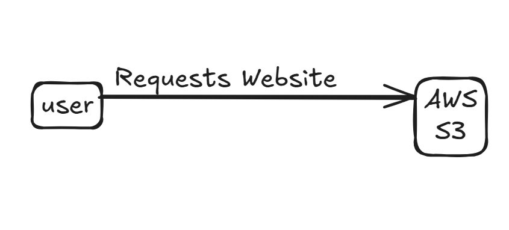
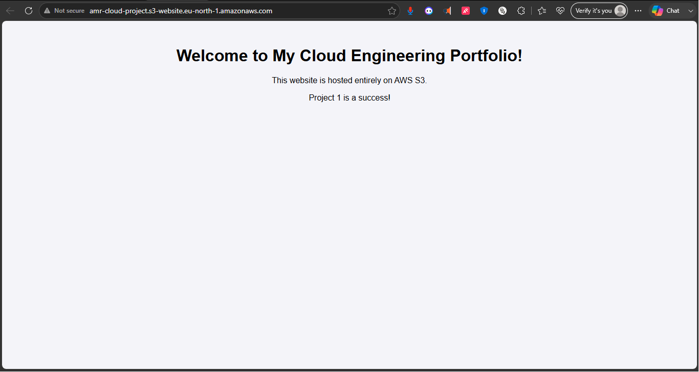

Projects / Project 01
Static website on S3
My starting point: turning a storage bucket into a web server, and learning how AWS layers its security controls.
The problem
Host a simple website on AWS with no servers, and make it publicly readable without making it publicly writable.
Architecture

How I built it
- Created a globally unique bucket and uploaded index.html.
- Enabled static website hosting with index.html as the index document.
- Turned off the bucket's Block Public Access setting so a public policy could be applied.
- Wrote a bucket policy that allows only s3:GetObject to everyone, so visitors can read files but not change or delete them.

Issue I hit and fixed
AWS rejected my bucket policy
Cause: the account-level and bucket-level Block Public Access setting overrides any policy that grants public access.
Fix: deliberately disabled it for this bucket, then applied the read-only policy. It taught me that AWS checks several independent layers and the strictest one wins.
Limitations
A starter project: the S3 website endpoint is HTTP only, with no CDN or custom domain. For a real site I would keep the bucket private and serve it through CloudFront with an origin access control and HTTPS.